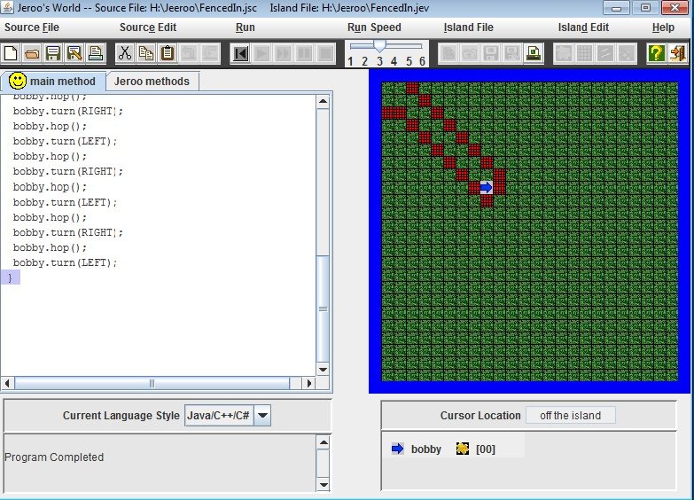
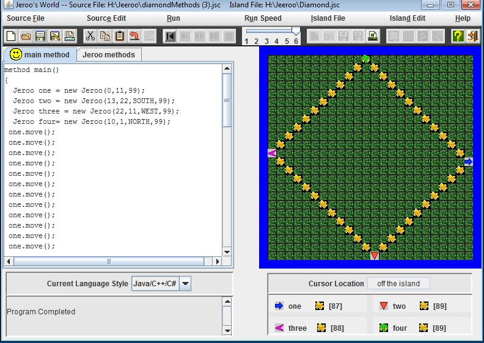
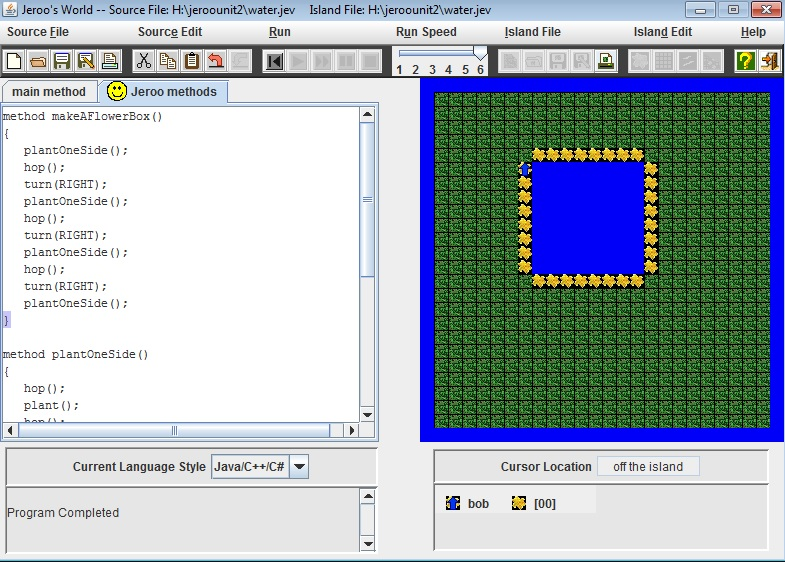
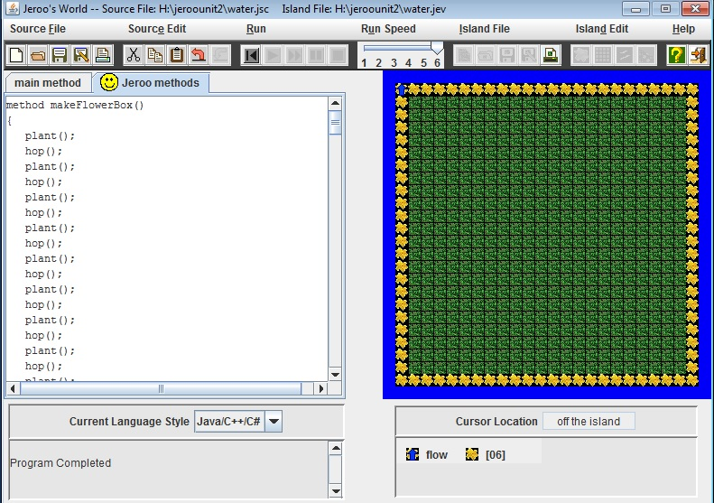
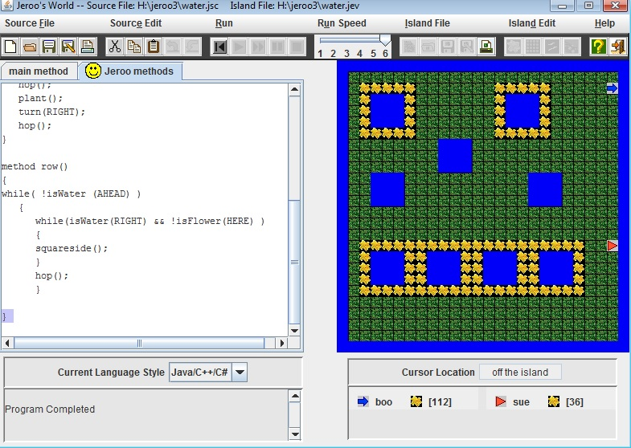
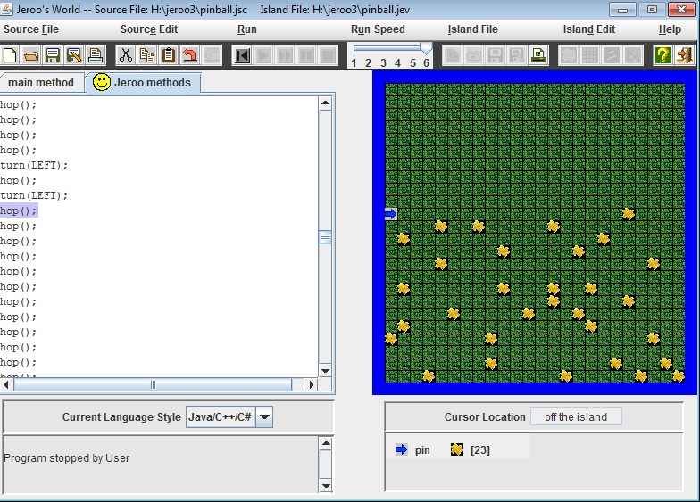
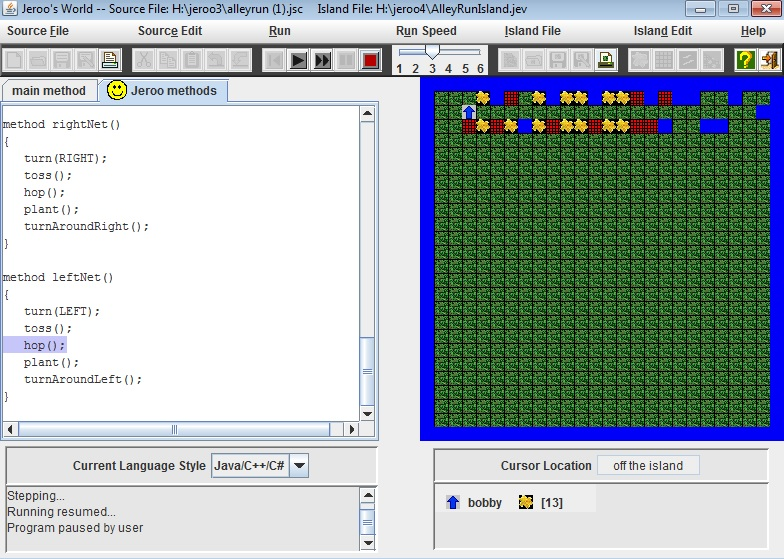
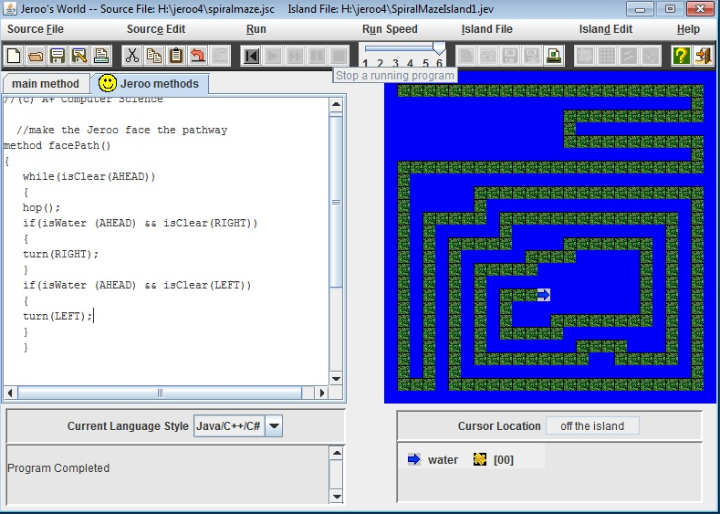

 
Description:
During Jeroo unit 1 we focused on the basics of Jeroo. We learned how to make new jeroos known as constructors. In addition, we saw the basic movements of a jeroo such as hop, pick, or plant. We also learned how to direct a jeroo using the directional fields.
 
Description:
During Jeroo unit 2 we focused on how to create different methods in order so we didn't have to put everything in the main method and thinking ahead so that one method can apply to all of the Jeroos.
 
Description:
During Jeroo unit 3 we focused on creating loops. Creating loops allowed us to not have to repeat the same methods. We also focused on different methods that have symbols that allow us to skip steps in the programming.
 
Description:
During Jeroo unit 4 we focused on if statements and conditions. We also learned to rely on if statements if your while loops turn out to be not true. We also learned that some if statements or while loops need to be embedded into each other.